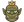

1 · Two faces need a steeper view
Today the cube is seen at 18° from above: its front face is a strip, about a third of a face, too thin to press and too thin to read a mark on. Tilted to about 34°, and turned a little more, the front face is more than half a face: a mark reads on it and it can be pressed. The up face stays the larger, so Play stays the die's first word. The dashed boxes are the two presses as the page would lay them; the numbers under each die are the front face's height as drawn here.
2 · Its states: the up face is Play, the front face the orks
The up face is today's (§196, §200): the play arrow at rest, the arrow glowing while it plays, the cross when the last start failed, the spark when dev is new. The front face is the orks' work: ■ muted while nothing runs, ■ in the danger colour only while something runs and spends, ↻ once stopped. The right face is blank, so the orks' side has one mark. Under the die the two words, as under a potion.
3 · Live: the Board rolls it, the person presses
Press the up face to play, the front face to stop and resume. Nothing is dragged or turned by the person: on Stop all the die makes a quarter turn on the table (round its up axis, so Play stays on top) and the face with ↻ Resume comes to the front; Resume turns it back. Under reduced motion the face just changes. The orks' runs come and go by themselves here every few seconds, so the front face goes muted and red on its own.
4 · The door is the person: Here or Away
At the top row's end, where Stop all stood, alone (the bug has gone to the menu). Open: Here. Shut: Away until 19:00. The hours from Settings (When I am at the computer, §245.5) lead; a press holds the other state until the next edge of the hours, said under the word. Press it.
Away: a step that will ask you (Talk's rounds, a review) waits for the first reset in your hours; a step that asks nothing takes the resets while you are away. The hand keeps what waits and sends no push, but for money and safety.
Here: as today, a step that asks starts in its turn and its cards come to the hand.
A press holds until the edge: shut at 15:00 inside your hours, it says Away until 19:00 · held; at 19:00 the hours lead again. With no hours set the door is yours alone.
Not here: the door opening by itself when you work at the computer; Away, but ask me on the phone. Both wait until the door has been used.
5 · The bug hides: the menu, and where something broke
No icon in the top row. Report a problem… is in the Orkmaster's …, beside Settings and Files; where something broke it is offered there, with its logs; while a fix runs the Orkmaster's line says it under the pane's title; a fix ready is a card in the hand (the person's move, §240).
The Orkmaster's …
Where it broke
While a fix runs

Fixing Orkboard: the map of System did not draw · Claude Code is on itDrawn for decisions §246 (spec 139). Drawn here first, for orkUI after a yes: the view at about 34° (.ork-die's cube), the front face's marks (stop, resume),
the right face blank, the quarter turn on the table. The door is orkUI's .ork-door as it is; only what it means changes.